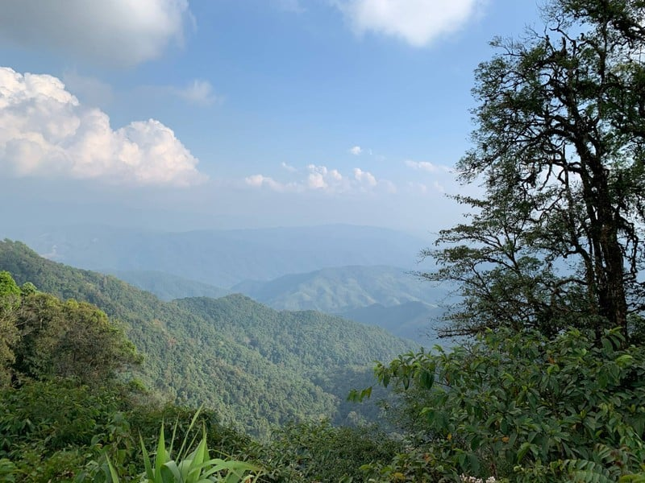

เที่ยวดอยภูคา - ธรรมชาติอันงดงาม

สัมผัสธรรมชาติและอากาศเย็นสบาย
ดอยภูคาเป็นสถานที่ท่องเที่ยวที่มีธรรมชาติอุดมสมบูรณ์ เหมาะสำหรับการพักผ่อนและศึกษาธรรมชาติ
สถานที่น่าสนใจ
อุทยานแห่งชาติดอยภูคา
ชมดอกชมพูภูคา
เส้นทางเดินป่าศึกษาธรรมชาติ
น้ำตกศิลาเพชร